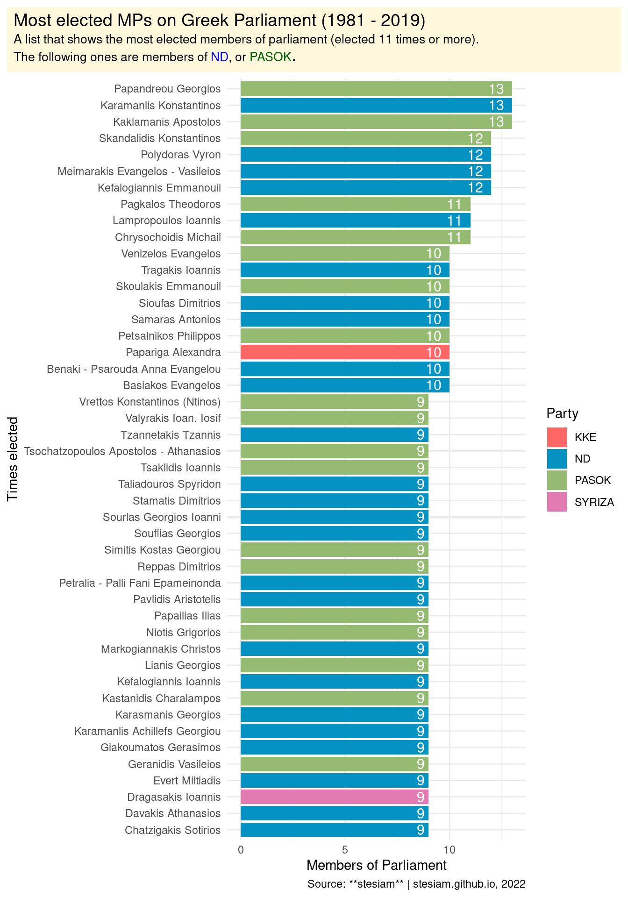

stesiam
Home
Posts
English Posts
Greek Posts
Web Projects
Material
Gallery
CV
Gallery
A collection of my visualizations. Some of them are based on popular challenges such as
#TidyTuesday
and
#30DayMapChallenge
. The collection is not restricted to those, as I find from time to time interesting datasets to work with.
On this page
30 Day Chart Challenge
Tidy Tuesday
30 Day Map Challenge
Greece in Figures
EU in Figures
Other Visualizations
30 Day Chart Challenge
Tidy Tuesday
30 Day Map Challenge
Public Music Schools in Greece
Railway Network of Greece
Regions of Greece
Pharmacies in Greece
Ports in Ukraine
Luxembourg’s City Bus Transportation
Population in Europe
Public Buildings, Lamia city
Starmap of Athens
Wildfire in Euboea
Greece in Figures
Pharmacies in Greece
GDP per capita
Dentists per Region
Population Density
Physiotherapists, 2020
Heating Oil Consumption
Electricity consumption, 2012
Vineyard Areas, 2020
Weddings, 2021
EU in Figures
Unemployment, 2022
R&D, 2021
Other Visualizations

Most elected MPs
Women Participation in DS
Age Distribution (GR & Rest of World)
Git vs SVN
Statistics Graduates per Year
Admissions through Panhellenic Exams
Structure of Student Population
Minimum Admission Grade
Admission Seats on each Statistics Department
Percentage of Electives


{kind=link}